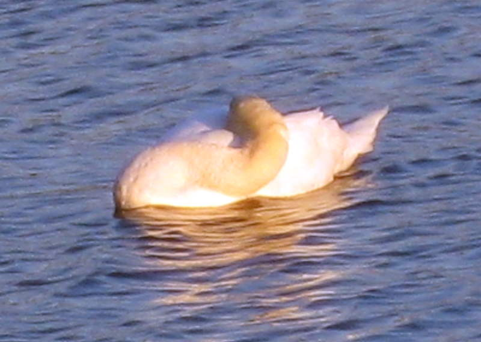

Manasquan Reservoir

The Manasquan reservoir is lined with large rocks. I got there with less than an hour of sunlight left.

I found a bird sleeping in the water in this seemingly contorted posture.
It was below freezing out. As I circled around the woods surrounding the reservoir, I saw this puddle icing over.
Just some gnarled-looking trees...
I noticed the sun getting pretty low through the trees, so I started to head back.
The sleeping bird woke up. You can tell from the water dripping off its beak that the swan has been hungry.
Quietly from afar, a duck is content to watch the swan hunt.

The dusk moon beams over the horizon.
Last shot of the reservoir, vibrant with wintery colors, as I drove off.
Back